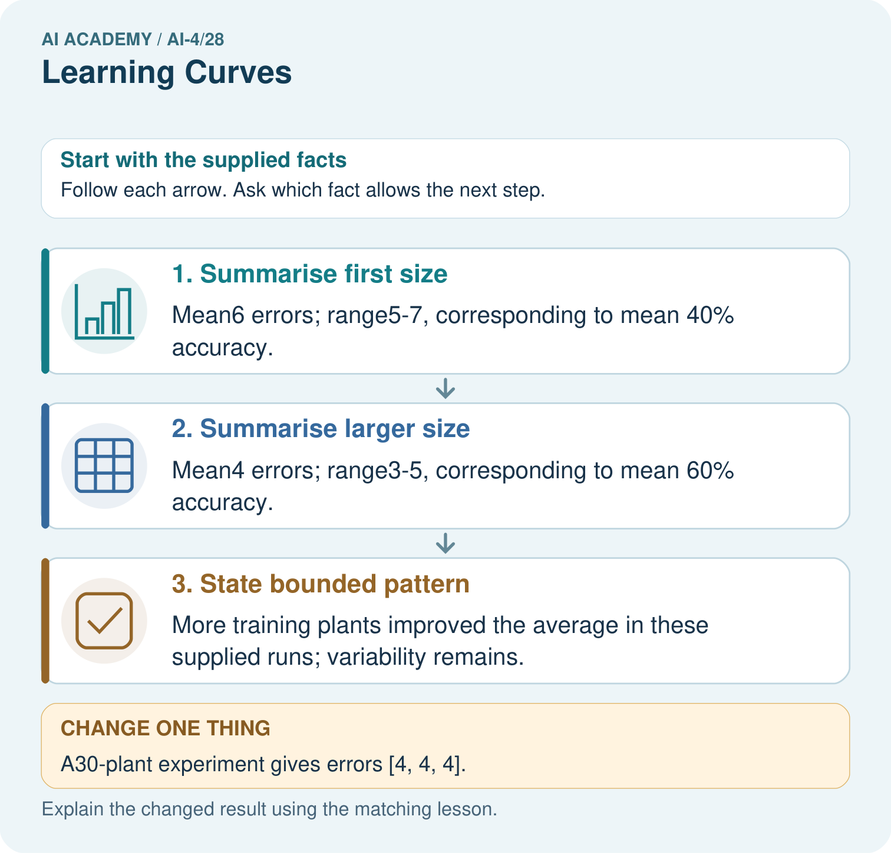
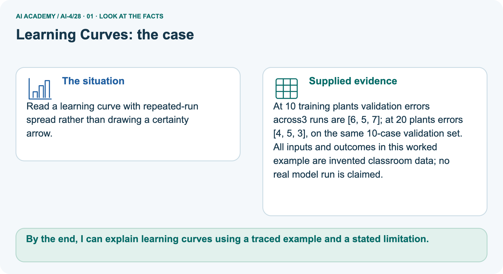
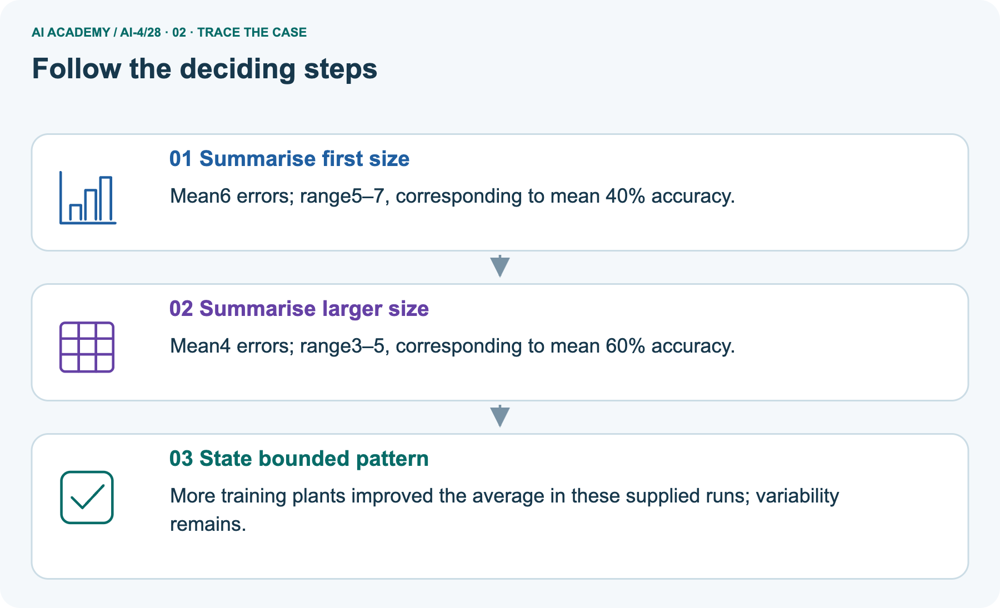
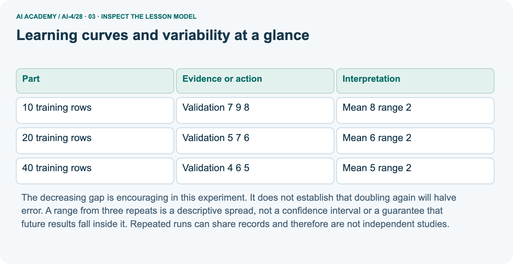
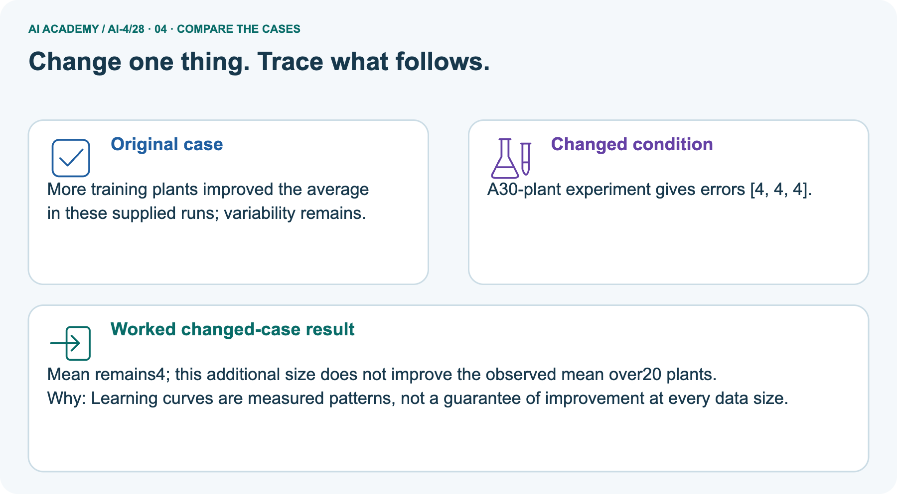
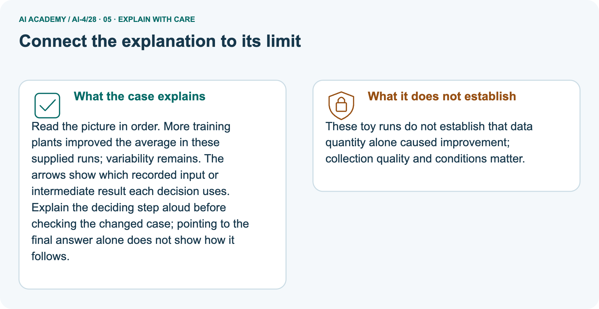

AI Academy · Level 4 · Grade 9 · Week 28 · Workbook
Learning Curves
Learn to understand, design, build, test and explain AI systems responsibly.
Project: Responsible Plant Classifier
THE CONNECTED WEEK
One readable curve-and-repeat evidence record.
Compute means/ranges,compare patterns and propose a controlled follow-up.
Keep one habit: W1–W3/W5 → selected repeat-count task → project curve record → changed-case return.
Main lesson · Section 1
Recall · Retrieve before notes
Keep this task’s complete inputs, stated rule and support record together.
Task and evidence record
Try the recall before opening notes. Then use a different colour or a labelled second line to correct your explanation.
Without opening the old lesson, explain one key idea from Overfitting. Give an example and a mistake that the idea helps you avoid.
Without opening the old lesson, explain one key idea from Metrics Match Consequences. Give an example and a mistake that the idea helps you avoid.
Without opening the old lesson, explain one key idea from Train a Regression Model. Give an example and a mistake that the idea helps you avoid.
Overfitting
Metrics Match Consequences
Train a Regression Model
Main lesson · Section 12
W1 · Explain the mechanism
Keep this task’s complete inputs, stated rule and support record together.
Task and evidence record
Main height-MAEcm at training sizes 10/20/40:validation repeats[7, 9, 8], [5, 7, 6], [4, 6, 5], means 8/6/5, minmax 7–9/5–7/4–6, width 2 each; training means 1/2/3. ClinicPtraining7 throughout/validationmean 8 throughout; Qtraining1 throughout/validationmean 9, 8, 8; Rmainpattern. Shading is observed min/max of3 supplied runs, not confidence/future interval.
Picture uses errors[6, 5, 7]and[4, 5, 3]on fixed 10 cases:means 6/4 errors, accuracy 40%/60%; 30 plant[4, 4, 4]keepsmean 4 with observedwidth 0.
Calculate the mean and range for the 20-row condition.
Main lesson · Section 13
W2 · Trace the current experiment
Keep this task’s complete inputs, stated rule and support record together.
Task and evidence record
Main height-MAEcm at training sizes 10/20/40:validation repeats[7, 9, 8], [5, 7, 6], [4, 6, 5], means 8/6/5, minmax 7–9/5–7/4–6, width 2 each; training means 1/2/3. ClinicPtraining7 throughout/validationmean 8 throughout; Qtraining1 throughout/validationmean 9, 8, 8; Rmainpattern. Shading is observed min/max of3 supplied runs, not confidence/future interval.
Picture uses errors[6, 5, 7]and[4, 5, 3]on fixed 10 cases:means 6/4 errors, accuracy 40%/60%; 30 plant[4, 4, 4]keepsmean 4 with observedwidth 0.
Why can training error rise while validation error falls?
Main lesson · Section 14
W3 · Repair the reasoning
Keep this task’s complete inputs, stated rule and support record together.
Task and evidence record
Main height-MAEcm at training sizes 10/20/40:validation repeats[7, 9, 8], [5, 7, 6], [4, 6, 5], means 8/6/5, minmax 7–9/5–7/4–6, width 2 each; training means 1/2/3. ClinicPtraining7 throughout/validationmean 8 throughout; Qtraining1 throughout/validationmean 9, 8, 8; Rmainpattern. Shading is observed min/max of3 supplied runs, not confidence/future interval.
Picture uses errors[6, 5, 7]and[4, 5, 3]on fixed 10 cases:means 6/4 errors, accuracy 40%/60%; 30 plant[4, 4, 4]keepsmean 4 with observedwidth 0.
Can the 40-row result guarantee a mean MAE of 2.5 at 80 rows?
Main lesson · Section 16
W5 · Plan the next check
Keep this task’s complete inputs, stated rule and support record together.
Task and evidence record
Main height-MAEcm at training sizes 10/20/40:validation repeats[7, 9, 8], [5, 7, 6], [4, 6, 5], means 8/6/5, minmax 7–9/5–7/4–6, width 2 each; training means 1/2/3. ClinicPtraining7 throughout/validationmean 8 throughout; Qtraining1 throughout/validationmean 9, 8, 8; Rmainpattern. Shading is observed min/max of3 supplied runs, not confidence/future interval.
Picture uses errors[6, 5, 7]and[4, 5, 3]on fixed 10 cases:means 6/4 errors, accuracy 40%/60%; 30 plant[4, 4, 4]keepsmean 4 with observedwidth 0.
Why is an observed range not a confidence interval?
Main lesson · Section 4
Try alone · Selected experiment task
Keep this task’s complete inputs, stated rule and support record together.
Task and evidence record
The selected task supplies validation error counts at training sizes 12 and24, with three repeats each. The validation-set size is not supplied, so compare observed count means/ranges without inventing accuracy percentages. A different training size is not the validation denominator.
Describe the observed mean/spread change and the limited three-repeat evidence; do not claim a guaranteed future interval or a causal quantity-only effect.
At sizes 12 and 24, validation errors are [6, 8, 7] and [4, 7, 7]. Calculate means/ranges and a careful comparison.
Attempt this case before feedback. Record any help. Earlier examples below are further practice; a case already practised with feedback cannot establish fresh transfer.
Independent case: Apply independently
Main lesson · Section 9
Project · Keep the experiment evidence
Keep this task’s complete inputs, stated rule and support record together.
Task and evidence record
Plot Plant Classifier train/validation performance at several training sizes and document the chosen next action.
The project change and evidence I will keep
Main lesson · Section 17
Feedback · Repair and return
Keep this task’s complete inputs, stated rule and support record together.
Task and evidence record
Revisit this idea with your teacher after a delay. Familiarity is different from explaining and using it on a changed case.
| Evidence | My record |
|---|---|
| Worked alone / hint / model | |
| First step I repaired and why | |
| New case checked later; date and result | |
| What I can now explain without notes | |
| One remaining question |
Main lesson · Section 10
Finish · Judge your evidence
Keep this task’s complete inputs, stated rule and support record together.
Task and evidence record
- I can explain the mechanism.
- I can show evidence.
- I can handle a changed case.
- I can name a limit.
Mark each as not yet, with help or independently, and attach supporting work.
Teacher review ____________________ Next step ____________________
Reference bank and extra practice
Choose the reference that helps your next step.
Reference · Supported W2 record
Reference · Section 2
Reference · Supported W2 record
Keep this task’s complete inputs, stated rule and support record together.
Task and evidence record
Use W2: Read both curves for Learning curves and variability. Record the answer once; the lesson and workbook refer to the same attempt.
| Given inputs | Procedure I chose | Middle steps | Result and check |
|---|---|---|---|
Extra practice · Individual reasoning check
Reference · Section 3
Extra practice · Individual reasoning check
Keep this task’s complete inputs, stated rule and support record together.
Task and evidence record
Use the worked case for Learning curves and variability. Proposed explanation: “A final answer is enough”. Decide whether this explanation is supported.
Point to the step or supplied fact that decides; explain your repair if needed.
Reference · Earlier learning target
Reference · Section 5
Reference · Earlier learning target
Keep this task’s complete inputs, stated rule and support record together.
Task and evidence record
Training sizes 20,40,80 yield validation accuracies 62%,70%,73%. Is doubling again guaranteed to yield 76%? Describe a defensible next experiment.
Extra practice · Earlier complete case
Reference · Section 6
Extra practice · Earlier complete case
Keep this task’s complete inputs, stated rule and support record together.
Task and evidence record
With20,40,80 training leaves, fixed-set validation accuracy is60%,70%,78%.
Interpret the curve and uncertainty.
Show your trace, calculation or evidence
Extra practice · Changed case
Reference · Section 7
Extra practice · Changed case
Keep this task’s complete inputs, stated rule and support record together.
Task and evidence record
As training examples grow from 50 to 100 to 200, validation accuracy is 60%, 72%, 78%. What does the curve suggest, and what does it not guarantee?
My independent answer and reason
Week 28 Test and reflect
Extra practice · Design a revealing test
Reference · Section 8
Extra practice · Design a revealing test
Keep this task’s complete inputs, stated rule and support record together.
Task and evidence record
Create a changed input, boundary case or missing-information case. Write the expected answer or safe response before testing.
| Test record | My evidence |
|---|---|
| Changed input or condition | |
| Expected answer or fallback | |
| Observed result | |
| Why the result occurred |
Extra practice · Earlier transfer
Reference · Section 11
Extra practice · Earlier transfer
Keep this task’s complete inputs, stated rule and support record together.
Task and evidence record
Training sizes 20,40,80 yield validation accuracies 62%,70%,73%. Is doubling again guaranteed to yield 76%? Describe a defensible next experiment.
Record support used: none, hint or teacher explanation.
Reference · Earlier W4 record
Reference · Section 15
Reference · Earlier W4 record
Keep this task’s complete inputs, stated rule and support record together.
Task and evidence record
At sizes 12 and 24, validation errors are [6, 8, 7] and [4, 7, 7]. Calculate means/ranges and a careful comparison.
Extra practice · Pictured case
Reference · Section 18
Extra practice · Pictured case
Keep this task’s complete inputs, stated rule and support record together.
Task and evidence record
Read a learning curve with repeated-run spread rather than drawing a certainty arrow.
At 10 training plants validation errors across3 runs are [6, 5, 7]; at 20 plants errors [4, 5, 3], on the same 10-case validation set.
All inputs and outcomes in this worked example are invented classroom data; no real model run is claimed.
What comparison is valid if the validation set changes between sizes? Point to the relevant step in the picture, then write the changed result and the rule or evidence that supports it.
Support used: alone / hint / worked example. This record is practice evidence.
Project connection: For your Responsible Plant Classifier, save the input, procedure, observed result and limitation of this check.
Label this worked example as practice; use a different, previously unreviewed case when checking independent understanding.



Reference · Project portfolio milestone
Reference · Section 19
Reference · Project portfolio milestone
Keep this task’s complete inputs, stated rule and support record together.
Task and evidence record
Project: Responsible Plant Classifier
Current milestone: Prepare the demonstration. Gather reproducible instructions, evidence, access checks and remaining limitations.
For your Responsible Plant Classifier, save the input, procedure, observed result and limitation of this check.
Label this worked example as practice; use a different, previously unreviewed case when checking independent understanding.
| Evidence to keep | My record |
|---|---|
| This week’s input and deciding step | |
| Prediction and actual result (or labelled paper trace) | |
| One change since the previous checkpoint and why | |
| One error or limit and the next test |
Extra practice · Predict, check and repair
Reference · Section 20
Extra practice · Predict, check and repair
Keep supported feedback separate from the reserved independent case.
First supported question and hint
Read a learning curve with repeated-run spread rather than drawing a certainty arrow.
Which labelled step matches this detail? More training plants improved the average in these supplied runs; variability remains.
1. State bounded pattern
2. Summarise larger size
3. Summarise first size
Hint if needed: Read the steps in the pictorial case. Match the supplied detail to the stage that performs or records it.
Practice 1: explain the deciding evidence
Check the first explanation
After your attempt, compare with the supported explanation: State bounded pattern More training plants improved the average in these supplied runs; variability remains. Read the picture in order.
More training plants improved the average in these supplied runs; variability remains. The arrows show which recorded input or intermediate result each decision uses.
Explain the deciding step aloud before checking the changed case; pointing to the final answer alone does not show how it follows.
Changed-case question and hint
Changed-case practice: A30-plant experiment gives errors [4, 4, 4]. Which conclusion is supported by the supplied facts?
1. Mean remains4; this additional size does not improve the observed mean over20 plants.
2. We can decide the result without examining the changed input or the procedure.
3. This one example guarantees correct results for every future input.
Hint if needed: Use the changed condition and the deciding step in the pictorial trace. The answer must say what follows from those facts.
Practice 2: explain the deciding evidence
Check the changed explanation
After your attempt, compare with the supported explanation: Mean remains4; this additional size does not improve the observed mean over20 plants.
Learning curves are measured patterns, not a guarantee of improvement at every data size.
Repair and keep the record
Review Overfitting (ai-4/27). Goal: Compare training and validation evidence for model capacity. Short practice: Does100% training accuracy prove Large was always best?
Point to the relevant step in the picture, then write the changed result and the rule or evidence that supports it.. Return to this week and explain what you changed.
Review Metrics Match Consequences (ai-4/25). Goal: Apply a declared score threshold including equality. Short practice: Which labels determine the false-alarm count at threshold 0.4?
Point to the relevant step in the picture, then write the changed result and the rule or evidence that supports it.. Return to this week and explain what you changed.
Review Train a Regression Model (ai-4/22). Goal: Fit a line from a declared training candidate set. Short practice: May day3’s evaluation label choose the candidate line?
Point to the relevant step in the picture, then write the changed result and the rule or evidence that supports it.. Return to this week and explain what you changed.
Use Download completed work in the hosted lesson to export your answers, reflections, practice feedback and code-run evidence. Open the HTML copy to read or print it.
Drafts stay in this browser when storage is available; clear drafts on a shared device.
Earlier wording, alternatives and picture transcripts
Use this supported practice once, in the browser or on paper. Keep the reserved independent assessment for a separate first attempt before teacher feedback.
Repair a missing building block
Keep your completed work
Reference · Six-picture response sheets
Reference · Section 21
Reference · Six-picture response sheets
Choose the relevant picture instead of repeating every task.
01. Learning Curves: the case



Read a learning curve with repeated-run spread rather than drawing a certainty arrow.
Supplied facts: At 10 training plants validation errors across3 runs are [6, 5, 7]; at 20 plants errors [4, 5, 3], on the same 10-case validation set.
All inputs and outcomes in this worked example are invented classroom data; no real model run is claimed.
Point to the given fact that matters most. Explain why it matters.
02. Follow the deciding steps



Summarise first size: Mean6 errors; range5–7, corresponding to mean 40% accuracy. → Summarise larger size: Mean4 errors; range3–5, corresponding to mean 60% accuracy. → State bounded pattern: More training plants improved the average in these supplied runs; variability remains.
Point to each numbered stage and explain which recorded input it uses.
03. Learning curves and variability at a glance



Learning curves and variability at a glance. 10 training rows | Validation 7 9 8 | Mean 8 range 2. 20 training rows | Validation 5 7 6 | Mean 6 range 2. 40 training rows | Validation 4 6 5 | Mean 5 range 2
Read the labels and values. Explain the relationship the model shows.
04. Change one thing. Trace what follows.



Original case: More training plants improved the average in these supplied runs; variability remains. Changed condition: A30-plant experiment gives errors [4, 4, 4].
Expected result: Mean remains4; this additional size does not improve the observed mean over20 plants. Reason: Learning curves are measured patterns, not a guarantee of improvement at every data size.
Predict before checking the worked changed-case result. Name what changed and what the supplied facts allow you to conclude.
05. Connect the explanation to its limit



Read the picture in order. More training plants improved the average in these supplied runs; variability remains. The arrows show which recorded input or intermediate result each decision uses.
Explain the deciding step aloud before checking the changed case; pointing to the final answer alone does not show how it follows.
Limit: These toy runs do not establish that data quantity alone caused improvement; collection quality and conditions matter.
Explain the case, then point to a limit on the claim.
06. Make the idea visible in your project


For your Responsible Plant Classifier, save the input, procedure, observed result and limitation of this check.
Label this worked example as practice; use a different, previously unreviewed case when checking independent understanding. Draw your input, deciding step, result and limit.
Supported question: What comparison is valid if the validation set changes between sizes? Point to the relevant step in the picture, then write the changed result and the rule or evidence that supports it.
Draw your project trace and justify the deciding step using evidence.